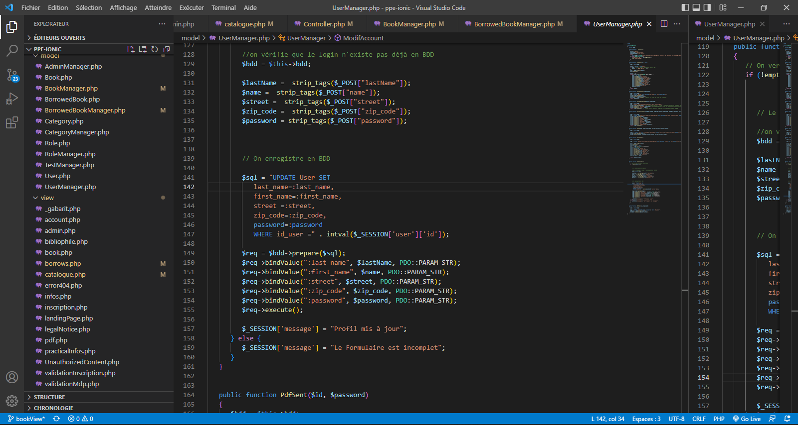
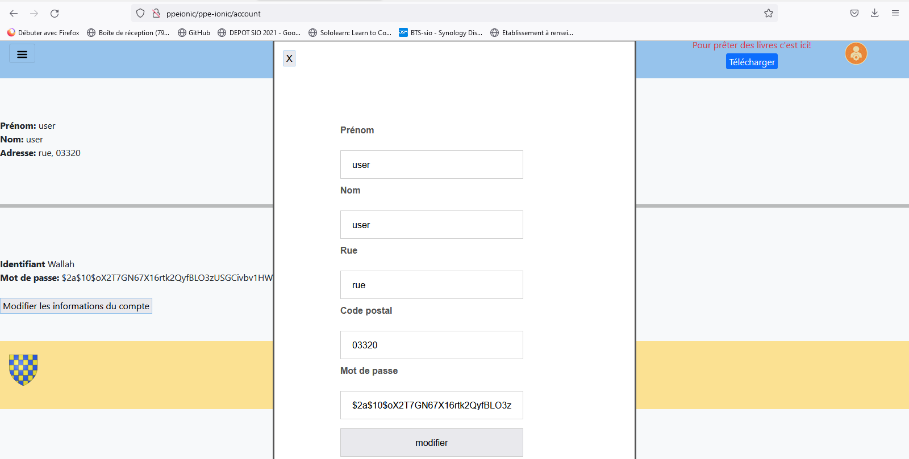

Après des études en comptabilité durant lesquelles j'ai découvert l'informatique, j'ai souhaité me réorienter
dans ce domaine pour l'aspect créatif et évolutif :
J'ai donc entrepris de poursuivre vers un BTS SIO.
Ce cursus a conforté mon choix et mon appétence pour ce domaine.
L'approche de l'informatique dans ce BTS m'encourage à approfondir mes connaissances et mes compétences par
le biais d'un Master 2, afin de me tourner vers une carrière de développeur Full-Stack.
Principalement orienté vers le développement, je reste toutefois intéressé par les autres branches du numérique, à savoir,
les objets connectés, la cybersécurité, le jeu vidéo ou l'intelligence artificielle.
Durant mon année de BTS SIO, j'ai réalisé un stage du 22/11/2021 au 24/12/2021 et du 14/02/2022 au 18/03/2022 soit respectivement 10 semaines au total (environ 500 heures)
au sein de l'association Quai des Bulles de St-Malo.
Durant ce stage, j'ai eu comme
projet d'études la réalisation d'une application de gestion de planning.
Ce projet m'a permis d'appréhender la création et le développement d'une application nouvelle de manière autonome sur une durée de 10 semaines.
J'ai développé cette application sous Windev, un logiciel de développement d'applications français ayant son propre langage,
le WLangage.
J'ai opté pour ce dernier car ce logiciel est très implanté dans le milieu professionnel.
En début de stage, j'ai commencé par un échange avec la cliente pour comprendre ses attentes et réaliser une analyse
de ces besoins afin d'élaborer ensemble un cahier des charges.
Tout au long de ce stage, nos échanges nous ont permis de réajuster, de concrétiser et de finaliser le projet.
Différentes étapes ont jalonné ce projet :
Tout d'abord élaboration de maquettes, découverte de Windev et
approche de son langage mais aussi création d'une base de données.
Exemples de maquettes Base de données
Puis, j'ai réalisé de nombreuses pages en respectant les demandes de la cliente, à savoir:
- Une interface d'accueil avec les informations principales
- Une partie pour entrer les données des différentes structures et groupes, des bénévoles, des activités et lieux
- Une partie pour du publipostage qui fut abandonnée durant le développement à la demande de la cliente
- Une partie planning regroupant l'ensemble des informations sous forme graphique
- Une partie récapitulative regroupant l'ensemble des bénévoles, des structures et des groupes avec possibilité d'impression
Lors de ce stage, j'ai rencontré de nombreux problèmes liés à la base de données et au code
ralentissant ainsi ma production, mais qui m'ont permis de comprendre l'importance de certaines étapes cruciales
( notamment la réalisation de la base de données) lors de la
création d'une application.
.
Pour conclure, ce fut un stage ardu mais néanmoins très formateur d'un point de vue technique et méthodologique.
Projet Biblio-Pouzy
Début mars durant mon année de BTS SIO, j'ai eu à produire en équipe une application lourde et légère pour l'E5 (soit les PPE),
application que nous avions nommé "Biblio-Pouzy".
Nous étions libres lors de la création mais nous devions respecter le contexte et la demande.
Ces derniers étant les suivants:
"À la demande de la maire de Pouzy-Mésangy, Madame Monique Guilly, pour des besoins en termes de culture mais manquant de fonds,
la mairie ne peut mettre en place une médiathèque.
Pour résoudre ce problème, après la demande de certains habitants pouvant prêter des livres, elle nous demande de réaliser
une interface web mettant en place un système d’emprunt participatif via un logiciel tiers concernant uniquement
les administrés de la ville (à savoir, 2500 habitants).
Ce projet se basera sur la réutilisation d’un logiciel précédemment mis en place par un administré.
Chaque habitant doit pouvoir accéder à sa bibliothèque et doit être en mesure de la gérer.
Jean-Luc Pignon, le consultant chargé de la transformation numérique de la mairie de Pouzy-Mésangy nous informe de ses attentes
qui sont les suivantes :
- Une analyse technique
- Une proposition de projet
- La mise en place d’une application et d’une interface web
- Une démonstration de ce projet"
Nous avons donc réalisé la création d'un cahier des charges et ce qu'il comprend: arborescence, schéma du site,
fonctionnalités, dictionnaire des données, users stories, calendrier, maquettes, gestions des risques, textes,...
Nous avons dans un même temps réalisé une base de données sous Workbench.
Par la suite, nous nous sommes donc décidés à coder sous PHP pour l'application légère avec un modèle MVC
(Model View Controller) et sous Java pour l'application lourde.
Nous nous somems partagés les tâches de création des pages web et d'application lourde:
Nous avions donc décidé de coder notre application légère sous PHP (en incluant une fois ou deux du javascript au besoin) dont l'objectif
est de permettre aux administrés de pouvoir échanger des livres entre eux:
Model View Controller

Page d'accueil & Inscription Home page qui est aussi le catalogue Page permettant d'emprunter le livre désiré Page permettant de voir et de modifier ses données personnelles

Les pages suivantes ne sont accessibles que par l'administrateur lui permettant ainsi la gestion
des rôles et des catégories, des livres, des emprunts et des utilisateurs
Et enfin nous avions codé notre application lourde sous java
permettant la gestion de ces propres livres à l'utilisateur concerné (application lourde
ne concernant donc que les prêteurs de livres):
Page de connexion Page de gestion des livres
La création de cette application nous a permis de nous améliorer tant sur le plan individuel que
sur le plan collectif.
Sur le plan individuel, il m'a permis d'approfondir mes connaissances aussi bien en faisant mes
recherches de mon côté qu'en échangeant avec les membres de mon groupe.
J'ai compris les différentes étapes de l'élaboration d'une application avec une contrainte de temps et les mettre en place.
J'ai pu améliorer ma méthodologie de travail notamment sur l'importance d'être rigoureux et de savoir anticiper.
Sur le plan collectif, il m'a permis d'améliorer mon esprit d'équipe (l'écoute et le partage d'idées et d'opinions,
le partage des tâches, ...) et mon adaptabilité à travailler avec des personnes différentes.
Ma veille technologique
Pour ma veille technologique j'utilise principalement 4 supports d'informations:
- Les sites internets (principalement le site NextInpact)